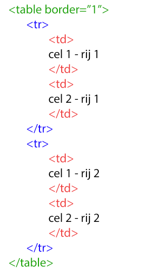
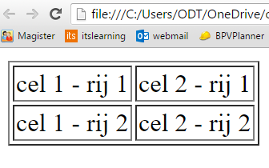
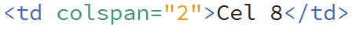
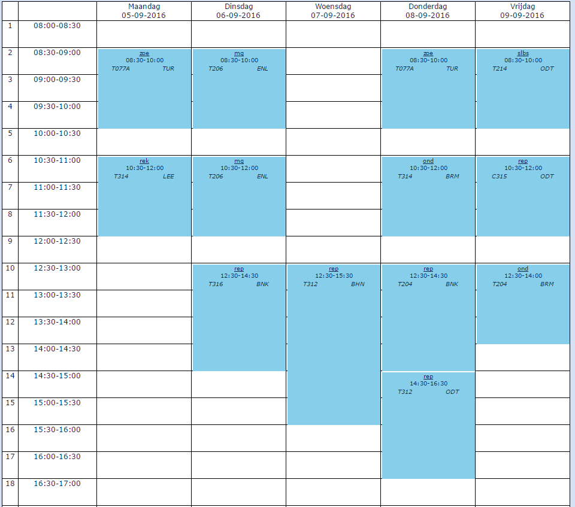

Tabellen
Tabellen kun je gebruiken voor het indelen van je pagina of om gegevens netjes weer te geven. Om een tabel te ontwikkelen moet je gebruik maken van meerdere html-tags.
- De hele tabel met <table> en </table>
- Elke rij met met <tr> en </tr>
- Elke cel met met <td> en </td> of kolomkoppen met <th> en </th>
- Cellen samenvoegen horizontaal (colspan) en verticaal (rowspan)
| Voorbeeld 1 | |
|  |  |
Elke tabel open je met een <table> tag. Vervolgens voeg je een “rij” (<tr>) toe. Als laatste ga je een “cel” (<td>) aanmaken. In die cel ga je tekst zetten. Als je dat hebt gedaan sluit je de cel (</td>) weer af. Als je genoeg “cellen” op 1 rij hebt staan dan sluit je ook de rij weer af (</tr>). Je kan nu het hele proces herhalen van een rij aanmaken, cellen aanmaken. Zorg dat je helemaal aan het einde niet vergeet de tabel af te sluiten (</table>).
| Let op: |
| Zorg dat je alle tags sluit, anders is de hele uitkomst van de tabel anders! |
Om het overzichtelijk te houden is het aan te raden om de code in te springen (tab-toets) op het moment dat er een nieuwe openingstag wordt getypt terwijl de laatste tag nog niet is afgesloten. Er wordt een <tr> getypt terwijl <table> nog niet is afgesloten. De <tr> spring je dan in. Bij <td> geldt hetzelfde. Hiermee houdt je de code overzichtelijk .
| Opdracht 1: Tabellen |
|
Open in je editor een nieuw HTML bestand.
Sla het bestand op als Opdracht6-1.html. |
Je ziet dat bij <table> de eigenschap border=”1” is toegevoegd. Eigenlijk is dit opmaak van je pagina en doen we dit met CSS. Dit gaan we later ook doen maar als je nu de eigenschap weg laat, zie je in je browser de randen niet. Daardoor is het lastig controleren of je het goed gedaan hebt. Er zijn nog veel meer eigenschappen die je aan <table>, <tr> en <td> kan koppelen maar dit is allemaal opmaak. Hier komen we later bij het CSS verhaal op terug.
Als vervanging van de <td> kan je ook <th> gebruiken. Dit staat voor Table Header. De tekst in deze cel wordt automatisch vetgedrukt. Eigenlijk opmaak maar de <th> mag gebruikt worden.
| Opdracht 2: Tabellen |
|
Open in je editor een nieuw HTML bestand.
Sla het bestand op als Opdracht6-2.html. |
Wat wel belangrijke eigenschappen van een <td> zijn de colspan en rowspan. Hiermee voeg je namelijk cellen samen. Wil je dit horizontaal doen, dus op een rij, dan gebruik je de colspan. Wil je dit verticaal doen, dus in een kolom, dan gebruik je de rowspan.
Hoe werkt het? Stel we willen in het voorbeeld hierboven Cel 8 en Cel 9 samenvoegen. Dit is horizontaal en dus op een rij. Je hebt dus de colspan nodig. Dit is een eigenschap van een <td>.
Je gaat naar de <td> van de éérste cel die samengevoegd moet worden. In dit geval is dat dus Cel 8. Aan de <td> voeg je een colspan toe. De code wordt dan: . De 2 staat voor het aantal cellen dat moet worden samengevoegd. Dat is hier Cel 8 & 9 dus 2 cellen. Belangrijk is dan nog dat je de <td> van cel 9 weghaalt! Anders zou je laatste rij 4 cellen bevatten.
| Opdracht 3: Row- & colspan |
|
Open in je editor het bestand van Opdracht6-2.html
Sla het bestand op als Opdracht6-3.html. |

| Opdracht 4: Rooster |
|
Open in je editor een nieuw HTML bestand.
Sla het bestand op als Opdracht6-4.html. |